Statement
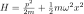
(Dirac 1927). Define as above and
as above and 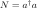
. Then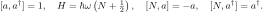
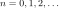
, (Heisenberg 1925).
(Heisenberg 1925).
Proof
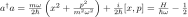
.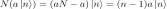
: lowers  by one,
by one, 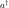
raises it.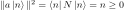
. Lowering repeatedly from a non-integer would reach a negative norm, impossible; so the sequence must stop at 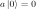
, forcing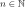
.- Normalisation: ,
 .
. - Ground state from :
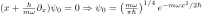
; higher states are Hermite functions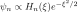
,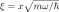
.
Useful matrix elements
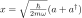
,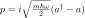
. In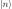
: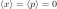
,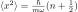
, so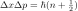
. Heisenberg picture: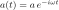
.Worked example
Vibration of CO,
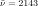
cm :
: 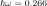
eV. At 300 K,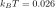
eV, so the population of is
is 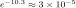
: molecules sit in the ground state, and IR absorption is the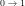
line (selection rule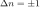
because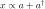
).Engineering applications
- Quantised LC circuit:
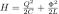
with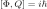
: microwave resonators of circuit QED, the transmon as an anharmonic oscillator. - Phonons (heat capacity, thermal conductivity), photons (field quantisation), trapped-ion motional modes.
- Zero-point fluctuations set the vacuum noise floor of amplifiers (
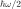
per mode).
Pitfall
The ground state is not at rest:
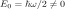
and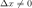
. Also is not Hermitian: it is not an observable.